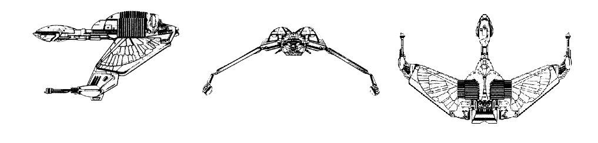

K-22 B'rel-class Scout (KE)

Battle Stats
Engines and Superstructure
Total Power Units - 25 (Warp Engines - 2x10, Impulse Engines - 5)
MPR - 2/1
Superstructure - 10
Maximum Warp - 1
Industry Points to Build - 3
Beam Weapons (Disruptors)
Max Power - 7
Firing Chart - U
Arcs - 1F/P, 1F/S
Bonuses - +3(1-7) +2(8-15) +1(16-20)
Missile Weapons (Photon Torpedoes)
Power to Arm - 1
Damage - 10
Firing Chart - Q
Arcs - 1F
Deflector Shields
Max Shield Power - 9
SPR - 1/3